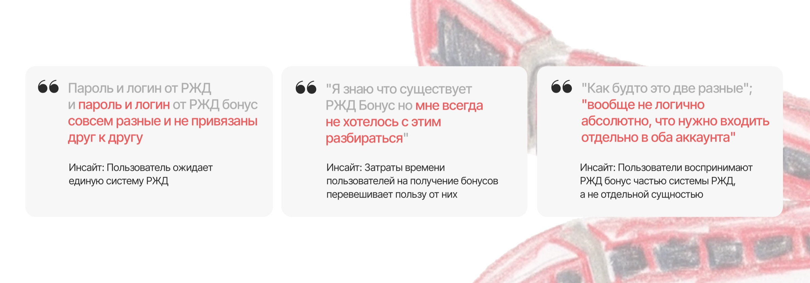
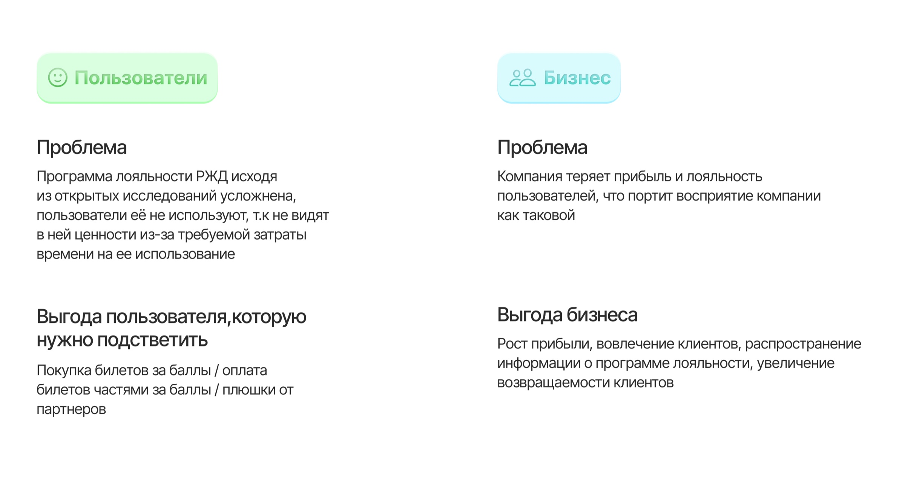
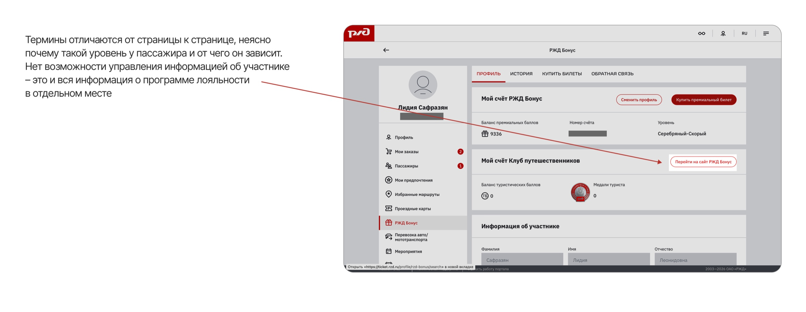
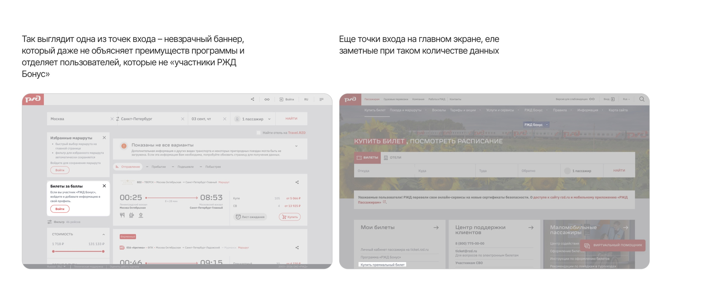
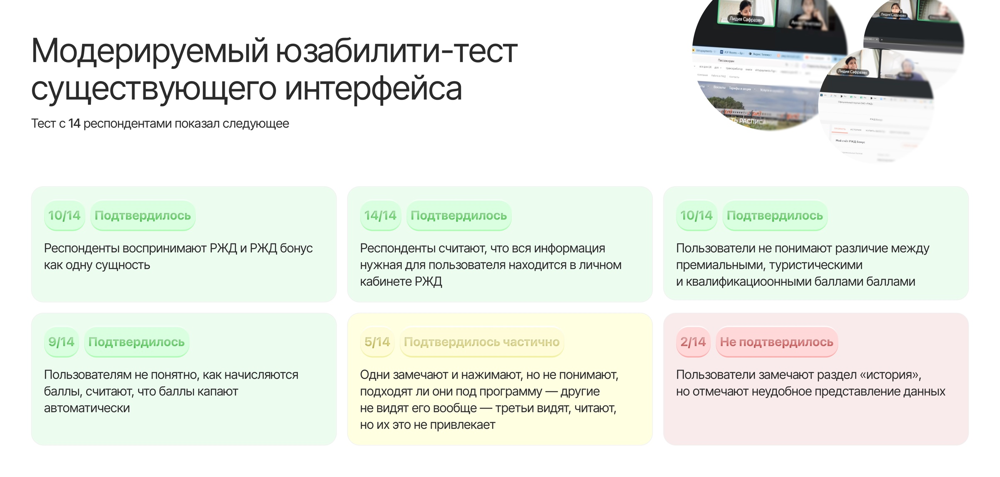
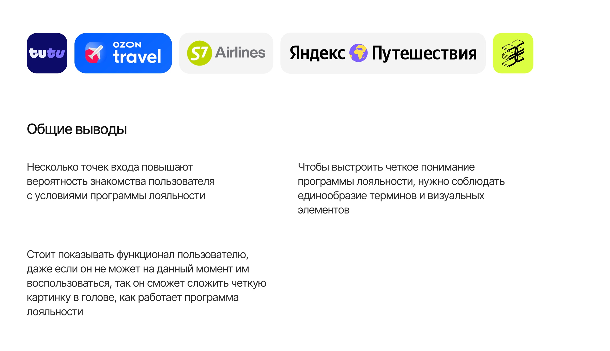

Оригинал и редизайн


Понимание проблемы
Было проведено открытое исследование, во время которого было изучено 100+ отзывов пользователей
Таблица с цитатами пользователей и проблемами
| Проблема | Цитаты пользователей | Примечания |
|---|---|---|
| Раздельность основного сервиса и программы лояльности | «При оформлении нужно быть уверенным пользователем ПК так как постоянно перекидывает с страницы на страницу, а пароль и логин от РЖД и пароль и логин от РЖД бонус совсем разные и не привязаны друг к другу.» «Сайт с бонусами требует отдельную регистрацию, она весьма не удобная.» «Для того, чтобы купить премиальный билет, нужно зайти во вкладку (на скрине выше) "купить билет", предварительно авторизовавшись сначала на сайте РЖД, а потом здесь же, введя логин и пароль для РЖД бонус.» «Никогда бы не подумала, что бонусная система может функционировать отдельно от основного источника бонусов.» «Бонусы “живут” отдельно от сайта РЖД.» «Я наивно полагала, что цифровая экосистема компании работает как единое целое.Про то, что “РЖД Бонус” — это, оказывается, отдельное государство, меня никто не предупредил.» | |
| Начисление бонусов требует дополнительных действий | «Оказывается, чтобы бонусы засчитали, нужно самостоятельно вводить все данные билета.» «При автоматическом варианте баллы приходили непредсказуемо: в произвольную дату и не все одновременно.» «После поездки отмечаю в календаре дату через 30 дней, чтобы не забыть начислить баллы.» | Инсайт:Затраты времени пользователей на получение бонусов перевешивает пользу от них |
| Личные данные необходимо поддерживать актуальными сразу в двух системах. | «Смс отправляется не на тот номер, который ты при оформлении указал, а на номер с профиля ржд бонус.» «Бонусная карта автоматически изменила все актуальные данные на устаревшие.» | Инсайт: Когда пользователь управляет несколькими связанными аккаунтами, он ожидает синхронизации данных, а не необходимости вручную контролировать, какой профиль влияет на оформление. |


UX-Аудит


Модерируемый юзабилити тест существующего интерфейса
Цель:
Узнать, замечают ли пользователи возможность использования РЖД Бонус при покупке билета, какие сложности возникают при оформлении билета за баллы
Задачи:
- Провести пользователя через процесс покупки билета за премиальные баллы
- Проверить хорошо ли пользователи считывают разделение РЖД и РЖД бонус на две разные платформы
- Проверить, как пользователи понимают принцип работы программы лояльности и видят ли ценность в ней
Исследовательские гипотезы:
- Пользователи ждут, что функции относящиеся к программе лояльности будут находится в личном кабинете на сайте РЖД (не на отдельном сайте РЖД Бонус.)
- Пользователи не замечают дропдаун «РЖД БОНУС» при оформлении билета.
- Пользователи не понимают различие между премиальными и квалификационными баллами.
- Пользователю не понятны как начисляются данные и он не предполагает,что для начисления нужны дополнительные действия
- Пользователи не замечают раздел с историей начислений и списаний бонусов в личном кабинете.
Целевая аудитория
Основной сегмент — не знают о программе
- 18–50+ лет;
- покупают билеты на сайте РЖД;
- не знают о существовании РЖД Бонус.
Второй сегмент — знают о программе, но не пользуются
- 18–50+ лет;
- покупают билеты на сайте РЖД;
- знают о РЖД Бонус;
- билеты за баллы не покупали.
Третий сегмент — активные пользователи
- 20–30 лет;
- покупают билеты на сайте РЖД;
- пользуются РЖД Бонус;
- покупали билеты за баллы.
Гайд в UX тесту
Вступление
Добрый день Имя, Я хочу поблагодарить Вас за то, что выделили время на интервью.
Меня зовут Лидия, я дизайнер интерфейсов. Сейчас я работаю над улучшением процесса покупки билетов на сайте РЖД и хочу лучше понять, как пользователи проходят этот путь сейчас: что им понятно, какие сложности возникают и какие моменты можно сделать удобнее.
Сегодня мы поговорим о вашем опыте покупки билетов на сайте РЖД. Я заранее предоставила вам данные для входа в аккаунт и попрошу вас выполнить несколько заданий так, как вы бы делали это в реальной жизни, а во время процесса буду задавать вопросы о ваших действиях и мыслях. Здесь нет правильных или неправильных ответов — я тестирую не вас, а интерфейс. Мне важно понять, как вы воспринимаете этот процесс, что ожидаете увидеть и почему принимаете те или иные решения.
Вы не против если я запишу нашу беседу на видео? Запись поможет мне не отвлекаться от беседы и не записывать за вами всё прямо сейчас. Она не попадет никуда во вне и будет пересматриваться только мной.
По времени встреча займет 40-50 минут.
В ходе встречи вы также можете задавать вопросы, если Вам что-то будет не ясно. Ваша критика помогает мне дорабатывать интерфейс и делать его более понятным
Давайте проведем маленькую техническую проверку перед стартом.
Попросить включить демонстрацию экрана в зум. инструктируем как "поделиться экраном" со своего компьютера через ZOOM. Чтобы мы видели во время интервью одно и тоже.
Вопросы по тесту
| Тема | Вопрос | Что узнаем |
|---|---|---|
Знакомство | Расскажите немного о себе: кем работаете, где живете | Погружаем в тему |
Знакомство | Если до этого покупал билеты на поезда,Где вы обычно покупаете билеты на поезда? Почему именно там? если не берет на поезда,спросить вообще чем пользуется | Узнаем чем пользуется |
Чем обычно пользуется и почему | Пользуетесь ли вы какими-либо программами лояльности при покупках билетов на самолет или поезд? Если да, какими? | Узнаем чем пользуется |
Чем обычно пользуется и почему | С какого устройства вы обычно совершаете покупки билетов? | Проверяю, что устройство привычное и обычно с него и бронирует |
Ю-тест
Теперь перейдём к практической части. Я попрошу вас выполнить несколько заданий на сайте РЖД и буду наблюдать за вашим процессом. Пожалуйста, комментируйте свои действия и мысли вслух: что вы ищете, что ожидаете увидеть, почему выбираете тот или иной вариант. Здесь нет правильных или неправильных действий — мне важно ваше реальное мнение и опыт.
Для этого включите, пожалуйста, демонстрацию экрана через функцию «Поделиться экраном» в Zoom.
Часть 1. Главная страница.Покупка билета
Представьте, что вы регулярно пользуетесь поездами РЖД и сейчас хотите купить билет. Для вас важно получить максимум преимуществ от покупки билета. Выполните покупку так, как сделали бы это в реальной жизни. Оплаичвать поездку мы естественно не будем. Попрошу вас комментировать свои действия. В том числе, что нравится на страниц, а что не нравится или непонятно.
Страница оформления с дропдауном
«Ожидали ли вы увидеть это именно здесь?» (дропдаун)
«Есть ли что-то, что вызывает сомнения?»
Если не заметили плашку РЖД БОНУС: Заметили ли вы что-либо,что помогло бы вам более выгодно совершить покупку билета в процессе?

Часть 2. Программа лояльности
если заметил РЖД БОНУС или пользуется:
- Ожидали ли вы увидеть это здесь, на этапе покупки?
- Насколько это место кажется вам логичным?
- Есть ли что-то, что вас регулярно сбивает или раздражает при использовании программы?
- Вспомните первый раз, когда вам понадобилось получить баллы за уже купленный билет. Как вы тогда поняли, что нужно делать?
- какими данными ты авторизуешься на ржд бонус(ржд или новые)
Давайте вернемся к странице оформления (если не заметили дропдаун)
Что, по вашему мнению, можно сделать через этот блок?
как вы думаете что произойдет дальше при нажатии на кнопку?
заходит в аккаунт:Какая разница между туристическими и премиальными баллами
ввел номер карты продолжаем
после покупки (вернемся в аккаунт в ржд)
Начислили ли вам баллы за покупку этого билета,если да - то сколько (должен попробовать найти это в аккаунте на РЖД)
баллы не начислены
баллы не появились. Попробуйте разобраться, что можно сделать.
посмотрим на предыдущие билеты или аккаунт:
Если нет - что вы будете делать дальше
Как вы думаете, где может находиться управление вашей программой лояльности?
«Если бы вы сейчас закрыли эту страницу, что бы вы могли рассказать другому человеку про РЖД Бонус?»

КОНЕЦ
— У меня вопросы закончились. Спасибо вам большое за интервью!
Если хочется ещё поделиться чем-нибудь про бонусные программы или бронирования, то можем обсудить
есть ли у вас какие-то вопросы?
Есть ли среди ваших знакомых люди, которые пользуются РЖД и могли бы поделиться своим опытом покупки билетов для исследования?
Результаты теста:

Бенчмаркинг (полный разбор)
Изучено 4 косвенных конкурента и 1 паттерн-референс

User flow существующего интерфейса
Составление флоу помогло разобраться в механике покупки билета за баллы: где начинается путь, из скольких шагов состоит и в каких местах ломается. Приоритизированные ниже гипотезы закрывают большинство проблем этого пути — отдельную регистрацию, повторный ввод данных, ручной перенос номера счёта и тупик, когда баллов не хватает.

Приоритизация гипотез:
| Гипотеза | Impact | Confidence | Ease | ICE Score |
|---|---|---|---|---|
Если сделать баннер о программе лояльности в результатах поиска заметнее и понятнее объяснить в нём выгоду, то вовлечённость пользователей в программу вырастет. | 10 | 10 | 7 | 700 |
Если сделать РЖД БОНУС частью личного кабинета РЖД, вынести баланс баллов в хедер, то пользователи будут находить программу без подсказки. | 10 | 10 | 5 | 500 |
Если показывать будущее начисление баллов на экране успешной покупки и отражать его в истории со статусом «в обработке», то пользователи смогут чётко объяснить, что происходит с их баллами после покупки. | 6 | 8 | 10 | 480 |
Если собрать в блок частых вопросов те вопросы, которые возникали у пользователей в исследовании, то они будут находить ответы о баллах самостоятельно и быстрее. | 5 | 8 | 10 | 400 |
Если переименовать типы баллов понятными словами, переработать их пиктограммы и поставить премиальные баллы первыми как более востребованные, объяснив туристические так же полно, то пользователи будут понимать разницу между типами баллов. | 6 | 7 | 8 | 336 |
Если перенести списание баллов на этап выбора способа оплаты, дать выбор «списать или накопить» и показывать выгоду сразу в рублях, то пользователи будут чаще применять баллы при покупке. | 7 | 7 | 6 | 294 |
Модерируемый юзабилити тест обновленного интерфейса
После окончания проектирования,будет реализован прототип на локальном хосте с помощью Claude Code и проведен повторный Ux тест
Возможны повторные итерации и внесение правок по мере проведения тестов